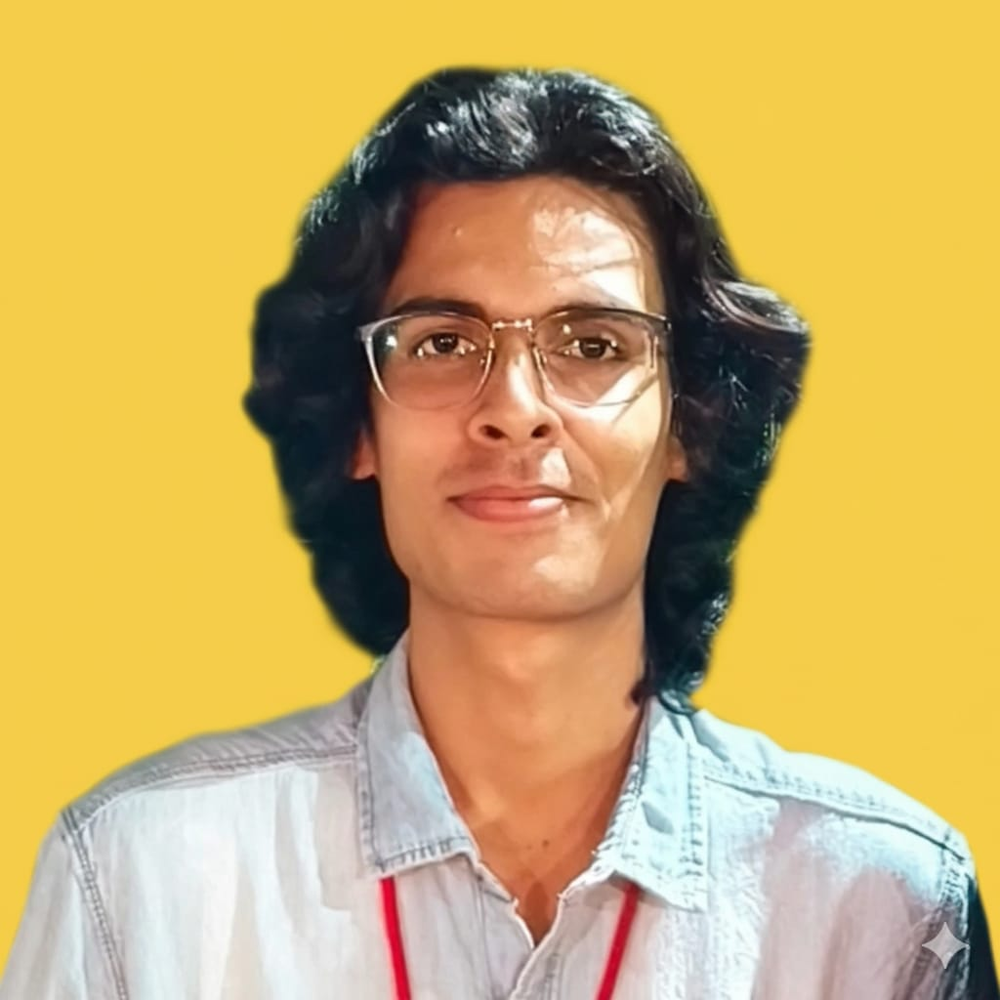

Morin Singh Rathore linkedin
Morin Singh Rathore has completed his Bachelor of Technology in Computer Science and Engineering from Rajasthan Technical University with
an outstanding CGPA of 9. He is a technicaly profound individual. He has various industry experiences most notable being worked as a Digital Specialist Engineer in
Infosys Ltd which is India's top company as per 2026 trends. He has also worked with GRRAS Solutions, Jaipur as a Data Strurture and Algorithm Trainee.
The technical skills he possesses are:
Apart from the highly qualified technical background, he excels in extra-curriculars as well namely - Singing, Poetry writing, Article Writing, Story Writing,
Anchoring, Script Writing, Hosting Shows etc. The non-technical skills he possesses are leadership, time management, quick learner, problem solver, and
teamwork. His strengths are his confidence which he gained by participating in various numerous events, and his quick learning ability. His weakness is his
laziness but even that makes him find ways to do things easily.
His short term goal is to crack GATE 2027 and his long term goal is to become a knowledgeble, kind, brave, empathetic human, and the best version of himself
along with everything he wishes to do. As Oscar Wilde said, Being a human is not about becoming everything you choose to become, rather it is unbecoming
everything. If you become what you choose become, then that is your punishment. We are not nouns. We are not engineers, doctors, lawyers, poets, cricketer or
a footballer. We are verbs; we are action words. We do, we write, we play, and we feel. Perhaps bringing Oscar Wilde's words to life is his purpose.